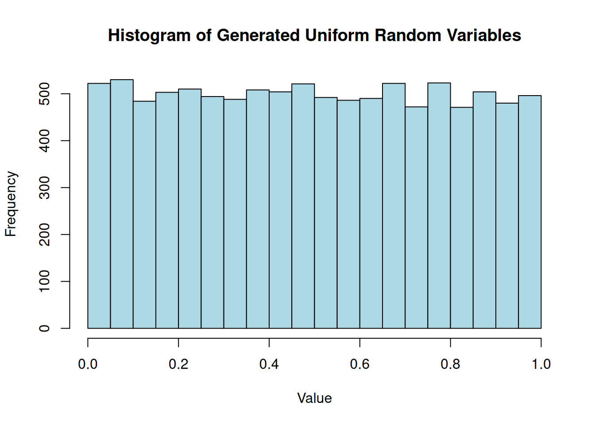
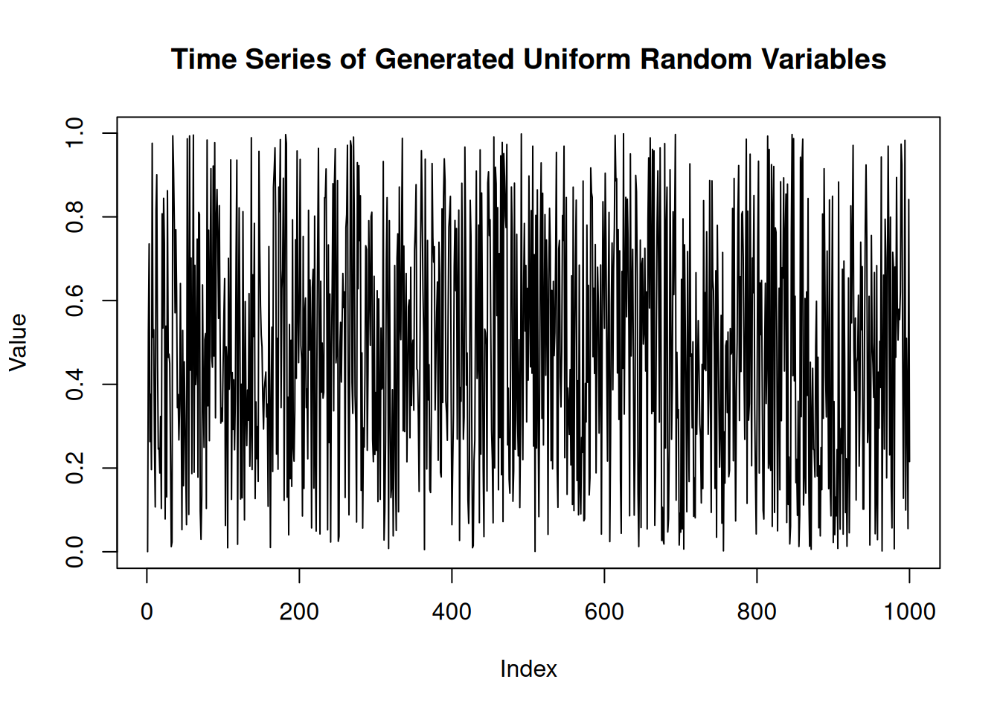
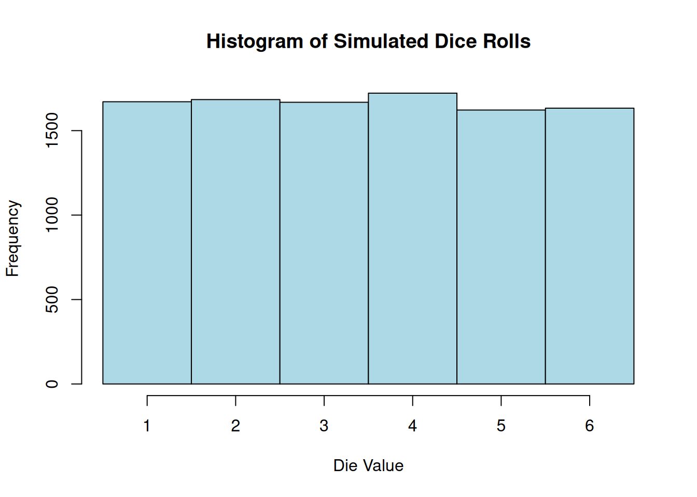
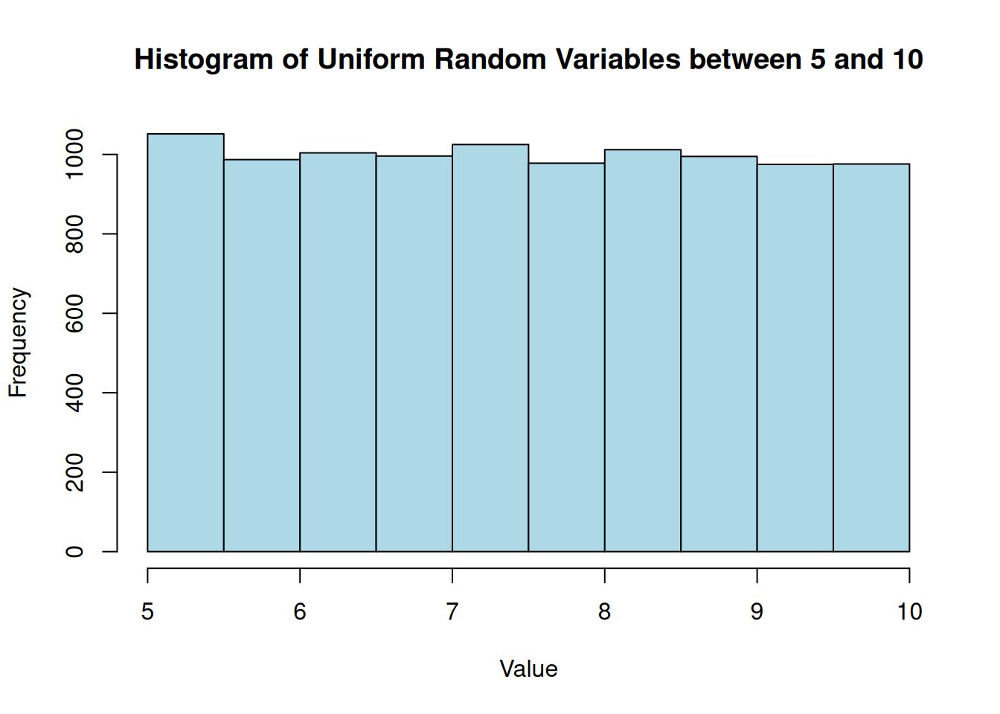
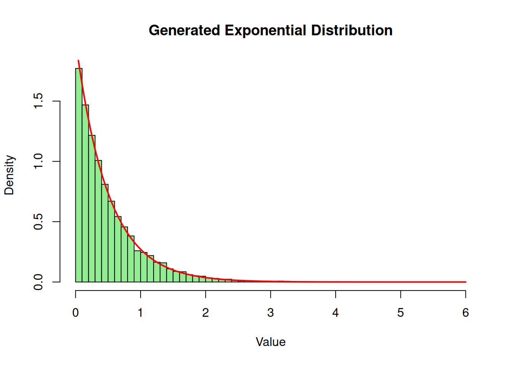
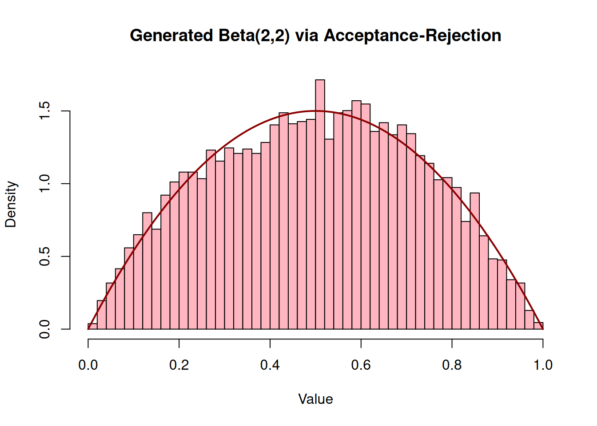
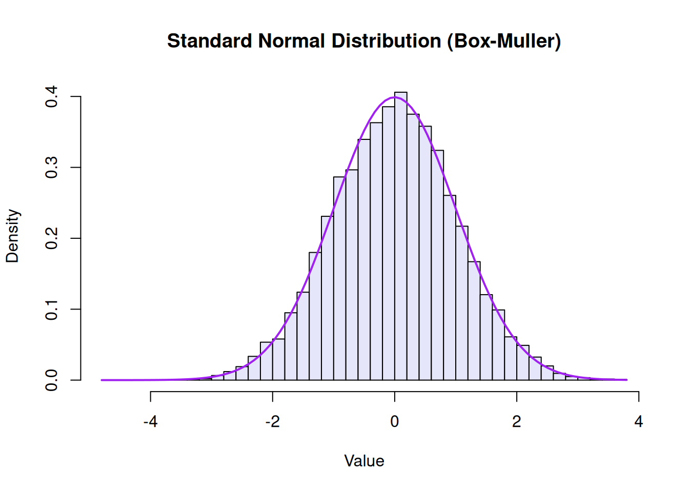

Generating Other Distributions from Uniform Random Variables
In this post, we explore how to generate random variables from various distributions using uniform random variables. We will cover techniques such as the Inverse Transform Method, Box-Muller Transform, and Acceptance-Rejection Method, along with their applications and implementations in Python and R
Uniform Distribution
Pseudorandomness
LCGs
Statistical Computing
Python
R
Author
Anant Kumar
Published
February 21, 2026
Introduction
In one of my previous post, we discussed how to generate random variables using Linear Congruential Generators (LCGs). The LCGs usually generate uniform random variables (as we shall see shortly), but in many applications, we need to generate random variables from other distributions, such as normal, exponential, or Poisson distributions. In this post, we will explore various techniques to generate random variables from different distributions using uniform random variables.
Uniform Random Variables
Before we dive into generating other distributions, let’s briefly review how to generate uniform random variables using LCGs. An LCG is defined by the recurrence relation:
\[
x_{n+1} = (ax_n+c)\text{ mod } m, \quad n=0, 1, 2, 3, \ldots
\]
One of the good set of choices for \(a\), \(c\), and \(m\) is to set
\[
a=7^5, \quad c=0,\quad m=2^{31}-1
\]
Let us implement this basic LCG in Python first:
class LCG:def__init__(self, seed, a=7**5, c=0, m=2**31-1):self.state = seedself.a = aself.c = cself.m = mdefnext(self):# The LCG formula: x_{n+1} = (ax_n + c) % mself.state = (self.a *self.state +self.c) %self.mreturnself.state/self.m # Return a value in the range [0, 1]prng = LCG(seed=42)generate_seq = [prng.next() for i inrange(10)]print(generate_seq)
This will generate a sequence of 10 random numbers uniformly distributed in the range [0, 1]. We can generate a larger sequence and visualize it to check for uniformity and randomness. But let’s save that for the R implementation, which is more concise for this purpose. In fact, the rest of the code in this post will be implemented in R, so let’s switch to R now.
Implement the LCG in R:
prngr <-function(seed, a, c =0, m, n) { current_state <- seed seq =numeric(n)for (i in1:n) { current_state <- (a * current_state + c) %% m seq[i] <- current_state/m }return(seq)}rand_seq <-prngr(seed=42, a=7**5, m =2^31-1, n =10000)print(rand_seq[1:10])
The histogram shows that the generated values have pretty uniform distribution while the time series plot shows that there are no obvious patterns in the generated sequence, which is a good sign for a pseudorandom number generator.
hist(rand_seq, main ="Histogram of Generated Uniform Random Variables", xlab ="Value", ylab ="Frequency", col ="lightblue")

plot(rand_seq[1:1000], type ="l", main ="Time Series of Generated Uniform Random Variables", xlab ="Index", ylab ="Value")

Adjusting the Range
Let’s consider a version of the LCG which generates integer values in the range 0 to \(m\) instead of floating-point numbers in the range [0, 1]. This can be achieved by simply returning the state without dividing by \(m\):
prngrInt <-function(seed, a, c =0, m, n) { current_state <- seed seq =numeric(n)for (i in1:n) { current_state <- (a * current_state + c) %% m seq[i] <- current_state }return(seq)}rand_int <-prngrInt(seed=42, a=7**5, m =2^31-1, n =10000)print(rand_int[1:10])
But we want to play a game of dice, which means we want to generate random integers between 1 and 6. How do we take an integer in the range 0 to \(m\) and convert it to an integer in the range 1 to 6? We can use the modulo operator to achieve this:
This will give us random integers between 1 and 6, simulating the roll of a die. The histogram of the generated dice rolls should show that each number from 1 to 6 appears with roughly equal frequency, indicating that our method is working correctly.
hist(rand_dice, breaks =seq(0.5, 6.5, by =1), main ="Histogram of Simulated Dice Rolls", xlab ="Die Value", ylab ="Frequency", col ="lightblue")

U(0,1) to U(a,b)
In general, we can use the formula generating random numbers between 0 and 1 to generate random numbers between \(a\) and \(b\) as follows: \[
X = a + (b-a)U
\] Where \(U\) is a random variable uniformly distributed in the range [0, 1]. For example, to generate random numbers between 5 and 10, we can use the following code:
a <-5b <-10rand_uniform_ab <- a + (b - a) * rand_seqprint(rand_uniform_ab[1:10])
This will give us random numbers uniformly distributed between 5 and 10. The histogram of these numbers should show a uniform distribution between 5 and 10.
hist(rand_uniform_ab, main ="Histogram of Uniform Random Variables between 5 and 10", xlab ="Value", ylab ="Frequency", col ="lightblue")

Generating Other Distributions
Now that we have a good understanding of how to generate uniform random variables, we can use them to generate random variables from other distributions. In the remainder of this post, we will explore some common techniques for doing this, including the Inverse Transform Method, Acceptance-Rejection Method, and the Box-Muller Transform.
Inverse Transform Method
The Inverse Transform Method is one of the most straightforward ways to generate random variables from a continuous distribution, provided that the cumulative distribution function (CDF) is invertible.
Let \(U\) be a uniform random variable on the interval (0, 1). For any continuous probability distribution with CDF \(F\), the random variable \(X\) defined by: \[
X = F^{-1}(U)
\]
has the distribution \(F\). Let’s apply this to the exponential distribution. The CDF of an exponential distribution with rate parameter \(\lambda\) is \[
F(x) = 1 - e^{-\lambda x}
\]
Setting \(U = 1 - e^{-\lambda x}\) and solving for \(x\) gives: \[
x = -\frac{1}{\lambda} \ln(1 - U)
\] Since \(U\) is uniformly distributed on (0, 1), \(1 - U\) is also uniformly distributed on (0, 1). Thus, we can simplify this to \[
x = -\frac{1}{\lambda} \ln(U)
\]
Here is how we can implement this in R using our previously generated uniform sequence:
lambda <-2# Rate parameter# Using rand_seq from our LCGrand_exp <--(1/ lambda) *log(rand_seq)hist(rand_exp, breaks =50, freq =FALSE, main ="Generated Exponential Distribution", xlab ="Value", col ="lightgreen")# Overlay the theoretical density curvecurve(dexp(x, rate = lambda), add =TRUE, col ="red", lwd =2)

The Acceptance-Rejection Method
Sometimes the inverse CDF is mathematically difficult or impossible to compute explicitly. In these cases, the Acceptance-Rejection Method is incredibly useful.Suppose we want to simulate a continuous random variable with a target probability density function (PDF) \(f(x)\). We choose a “proposal” density \(g(x)\) which we already know how to simulate, and we find a constant \(c\) such that \(f(x) \leq c \cdot g(x)\) for all \(x\).
The algorithm works as follows:
Generate \(Y\) having density \(g\).
Generate a uniform random number \(U \sim U(0,1)\).
If \(U \leq \dfrac{f(Y)}{c \, g(Y)}\), accept \(X = Y\). Otherwise, reject \(Y\) and repeat.
Let’s simulate a Beta(2, 2) distribution. The PDF is
\[
f(x) = 6x(1-x), \quad 0 \leq x \leq 1
\]
Since the domain is [0, 1], we can use the uniform distribution as our proposal distribution, meaning \(g(x) = 1\). The maximum value of \(f(x)\) occurs at \(x = 0.5\), which gives \(f(0.5) = 1.5\). Therefore, we can set our bounding constant \(c = 1.5\).
n_samples <-10000accepted_samples <-numeric(0)c_val <-1.5# We will generate pairs of uniforms to act as Y and Ufor (i in1:n_samples) {# In practice, you'd pull from your LCG sequence. # Using runif here for clarity in the loop structure. Y <-runif(1) U <-runif(1) f_Y <-6* Y * (1- Y) g_Y <-1if (U <= f_Y / (c_val * g_Y)) { accepted_samples <-c(accepted_samples, Y) }}hist(accepted_samples, breaks =40, freq =FALSE, main ="Generated Beta(2,2) via Acceptance-Rejection", xlab ="Value", col ="lightpink")curve(dbeta(x, 2, 2), add =TRUE, col ="darkred", lwd =2)

The Box-Muller Transform
The Box-Muller transform is an elegant mathematical trick designed specifically to generate independent, standard, normally distributed random variables.
Given two independent uniform random variables \(U_1\) and \(U_2\) on the interval (0, 1), the Box-Muller transform generates two independent standard normal variables \(Z_1\) and \(Z_2\):
We can split our rand_seq of 10,000 uniform variables into two sets of 5,000 to represent \(U_1\) and \(U_2\):
# Split the sequence in halfU1 <- rand_seq[1:5000]U2 <- rand_seq[5001:10000]# Apply the transformZ1 <-sqrt(-2*log(U1)) *cos(2* pi * U2)Z2 <-sqrt(-2*log(U1)) *sin(2* pi * U2)# Combine them for a total of 10,000 standard normal variablesrand_normal <-c(Z1, Z2)hist(rand_normal, breaks =50, freq =FALSE, main ="Standard Normal Distribution (Box-Muller)", xlab ="Value", col ="lavender")curve(dnorm(x), add =TRUE, col ="purple", lwd =2)

Conclusion
Starting with nothing but a basic Linear Congruential Generator, we’ve walked through how to generate uniform variables and then mathematically bend them into entirely new shapes. Whether you are using the Inverse Transform for simple inverses, Acceptance-Rejection for complex bounded densities, or Box-Muller for normals, the \(U(0,1)\) random variable remains the fundamental building block of statistical computing and Monte Carlo simulations.